Canadá
O Canadá é um país norte-americano que se estende desde os EUA, no sul, até o Círculo Polar Ártico, no norte. Entre suas grandes cidades estão a gigantesca Toronto; Vancouver, centro cinematográfico da costa oeste; Montreal e Québec City, que falam francês; e a capital, Ottawa. As vastas regiões de natureza selvagem do Canadá compreendem o Parque Nacional de Banff, repleto de lagos nas Montanhas Rochosas. Abriga também as Cataratas do Niágara, um famoso conjunto de enormes cachoeiras. ― Google Capital: Ottawa Moeda: dólar canadiano População: 37,59 milhões (2019) Banco Mundial Idiomas oficiais: Francês, Inglês
Pontos turisticos
Banff National Park – Alberta
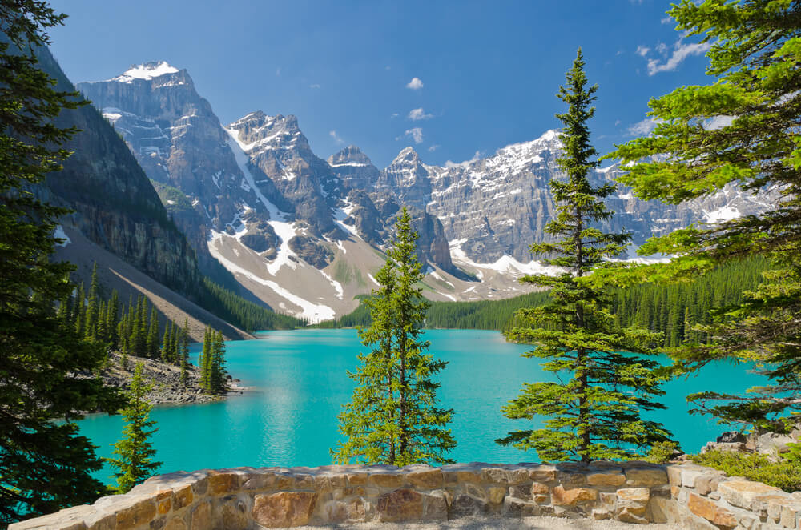Quer conhecer um patrimônio mundial da Unesco? O Banff National Park, em Alberta, é uma ótima opção. Com geleiras sobre as montanhas e águas cristalinas, o parque conta com diversas atividades ao ar livre. Você pode escolher entre muitas opções de esportes, como praticar rafting no verão ou patinar no inverno. A variedade de pousadas, hotéis e resorts proporcionam experiências únicas, como acordar com uma vista incrível como a da foto acima, do Lake Louise.
CN Tower – Toronto
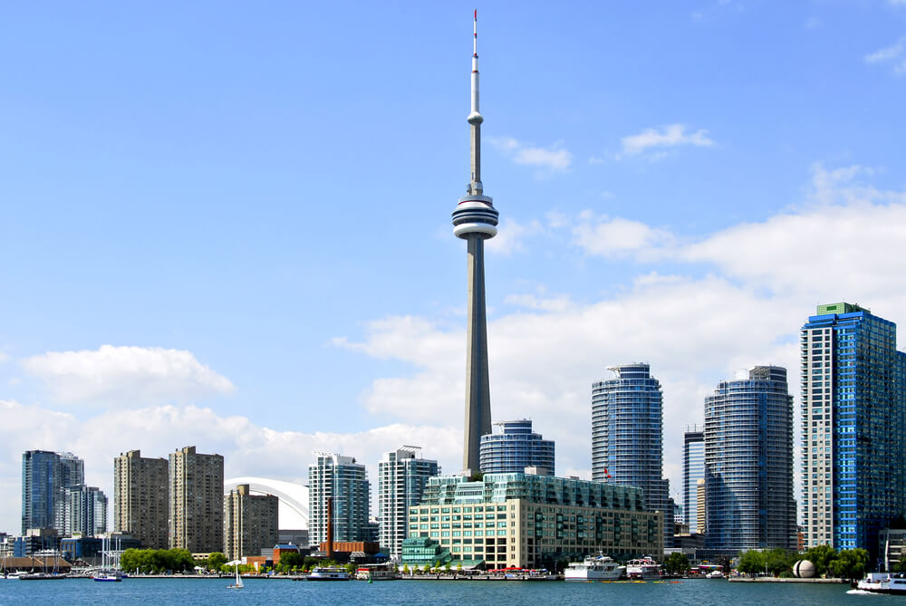Se você é mais urbano, quer visitar uma atração diferente e de quebra sentir um friozinho na barriga, a dica é caminhar pela borda da terceira torre mais alta do mundo, a CN Tower. Finalizada em 1975, ela foi construída com o objetivo de resolver os problemas de transmissão de televisão que tinham seus sinais bloqueados por prédios cada vez mais altos. Com 553 metros de altura, hoje ela funciona também como ponto turístico, um dos mais visitados do Canadá. Do topo você pode admirar a vista, comer em um restaurante giratório ou caminhar pelo lado de fora preso por cabos de segurança.
Niagara Falls – Ontário
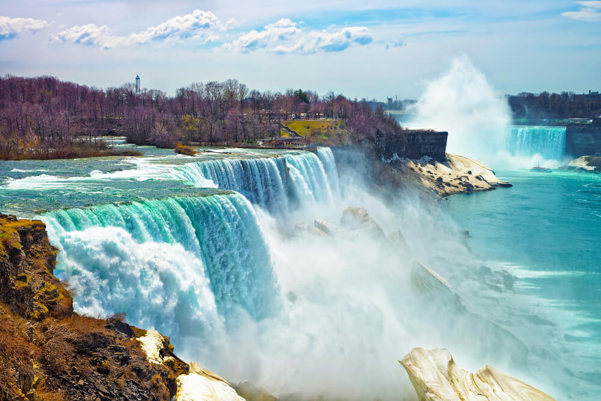Na província de Ontário, você encontra um dos maiores espetáculos da natureza: as Cataratas do Niágara. As três grandes cachoeiras do Rio Niágara formam um dos mais conhecidos pontos turísticos do mundo, atraindo milhares de visitantes todos os anos. A cidade gira em torno da atração e abriga um complexo de lazer completo, com resorts, restaurantes, vinícolas, parques e até cassinos. Diversão para todos os gostos em meio à natureza.
Norouega
A Noruega é um país escandinavo que abrange montanhas, geleiras e fiordes litorâneos profundos. Oslo, a capital, é uma cidade cheia de áreas verdes e museus. Navios vikings preservados do século IX são exibidos no Museu do Navio Viking de Oslo. Bergen, com suas casas coloridas de madeira, é o ponto de partida de cruzeiros rumo ao deslumbrante Fiorde de Sogn. O país também é famoso pela pesca, pelas trilhas e pelo esqui, especialmente no resort olímpico de Lillehammer. Capital: Oslo População: 5,328 milhões (2019) Eurostat Moeda: coroa norueguesa Rei: Haroldo V da Noruega
Pontos Turisticos da norouega
Skarsvåg
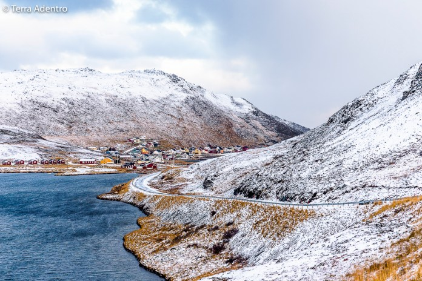Este belíssimo vilarejo no topo do mundo é considerado a vila de pescadores mais ao norte do planeta. Com uma população aproximada de 60 pessoas, Skarsvåg é a representação perfeita da vida e dos desafios no Ártico.
Hamnøy
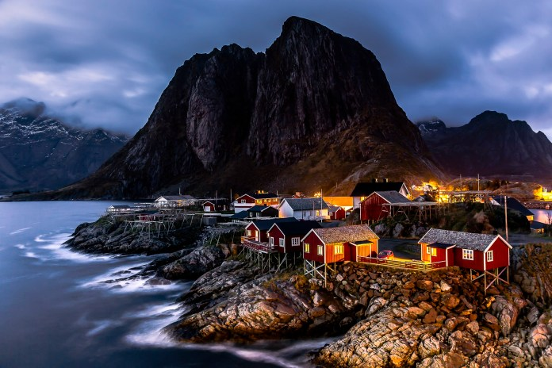Tido por muitos fotógrafos e viajantes experientes como um dos lugares mais bonitos do mundo, o vilarejo de pescadores de Hamnøy, nas Ilhas Lofoten, é um paraíso na Terra, especialmente por conta de suas pequenas cabanas vermelhas em frente ao mar, protegidas contra as intempéries climáticas por montanhas com mais mil metros de altitude.
As Estradas
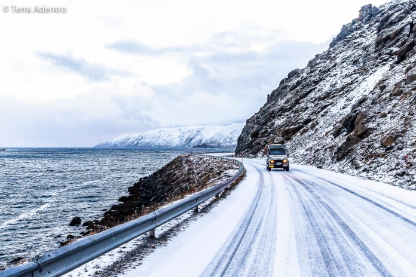Sem dúvida alguma, a Noruega é um dos países que possui algumas das estradas mais cênicas e isoladas do mundo, que cruzam uma diversidade incrível de paisagens, parques nacionais e antigos vilarejos de pescadores.
Nova Zelândia
A Nova Zelândia é um país no sudoeste do Oceano Pacífico formado por 2 ilhas principais, ambas marcadas por vulcões e glaciações. Na capital Wellington, na Ilha Norte, fica o museu nacional Te Papa Tongarewa. O imponente Monte Victoria, em Wellington, o Fiordland, na ilha Sul, e os Lagos do Sul foram cenário da mítica Terra Média nos filmes da série "O Senhor dos Anéis", de Peter Jackson. ― Google Capital: Wellington População: 4,917 milhões (2019) Banco Mundial Primeira-ministra: Jacinda Ardern Pontos de interesse: Milford Sound, Monte Cook/Aoraki, MAIS Idiomas oficiais: Língua maori, Inglês, Língua de sinais da Nova Zelândia
Pontos turisticos
Fox Glacier
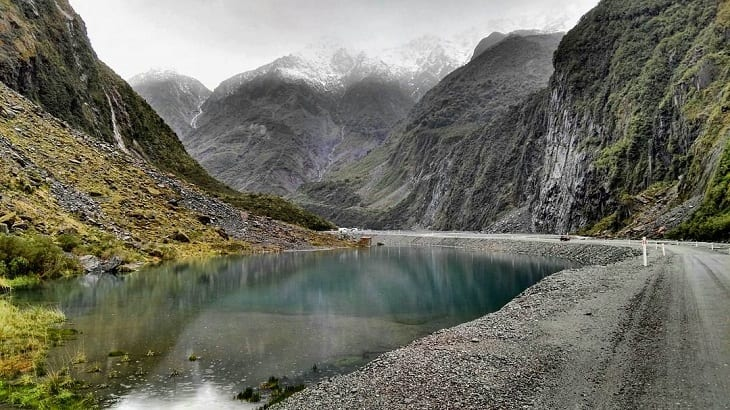Este município é composto por uma pequena vila e algumas geleiras. Aproveite o local para fazer um passeio completo: comece conhecendo as geleiras em uma caminhada guiada, ou fazendo um voo de helicóptero para ter uma vista panorâmica do local. Em seguida, aproveite toda a hospitalidade dos moradores da vila em seus cafés, lojas e galeria. Se quiser passar a noite por lá, não pense duas vezes, já que Fox Glacier é cheio de confortáveis e acolhedoras hospedarias.
Lago Taupo
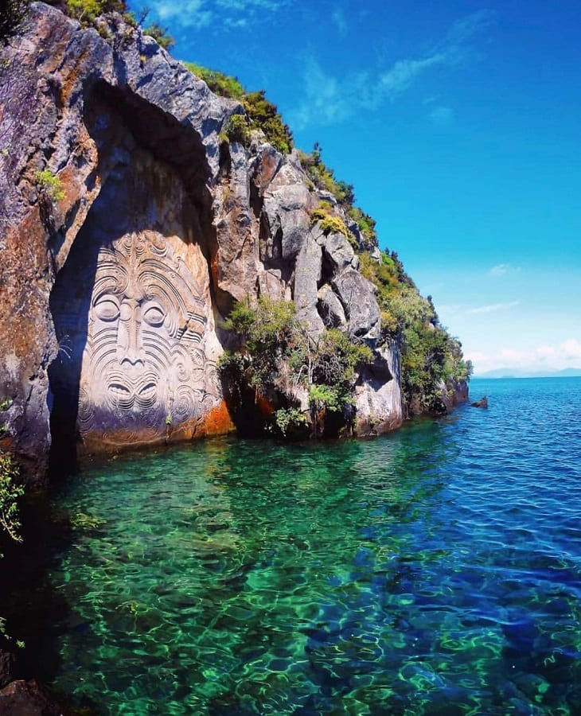Situado entre as cidades de Taupo e Turingi, este enorme lago de água doce (com 193 quilômetros de extensão) está em cima da caldeira de um vulcão com o mesmo nome. Não precisa se assustar, pois ele está dormente há muitos anos, e você poderá se divertir nas inúmeras atrações que estão ao redor do lago sem grandes problemas: desde trilhas a pulos de bugue-jump.
Parque Nacional Fiordland
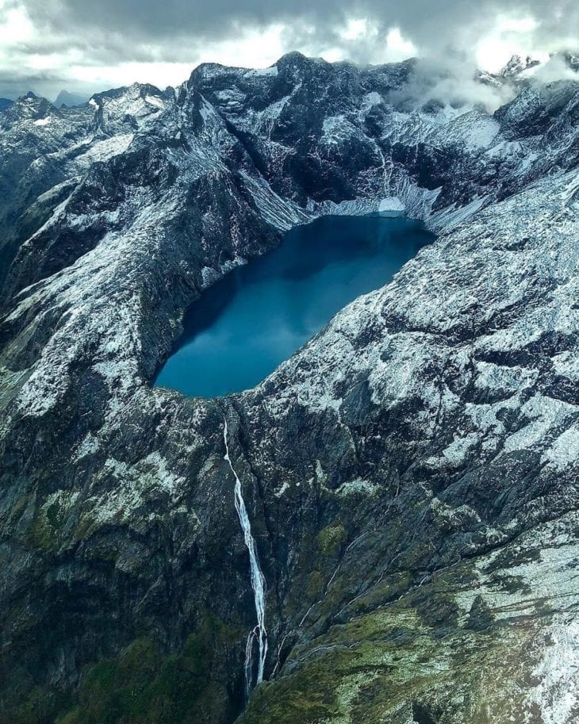Local certeiro para quem gosta de aventuras marítimas, o Parque Nacional Fiordland é propicio para mergulhar e praticar a pesca submarina. Bonito por cima e por baixo da água! Outras atividades convidativas são canoagem, passear de cruzeiro e apreciar os paredões rochosos, as cachoeiras e os animais, como os lobos-marinhos da Nova Zelândia e os pinguins-de-Fiordland. Considere também conhecer o parque de cima: existem empresas que oferecem um voo de helicóptero com vista panorâmica. Imperdível.
Suiça
A Suíça é um país montanhoso da Europa Central com um grande número de lagos, vilas e picos elevados dos Alpes. Suas cidades têm bairros medievais e monumentos como a torre do relógio Zytglogge, na capital Berna, e a ponte de madeira de Lucerna. O país também é conhecido por suas estações de esqui e trilhas. Os setores bancário e financeiro são muito importantes para a economia do país, e os chocolates e relógios suíços têm fama no mundo todo. ― Google Código de discagem: +41 População: 8,545 milhões (2019) Eurostat Moeda: franco suíço Idiomas oficiais: Italiano, Alemão, Francês, Língua romanche
Pontos Turisticos
Passeio de trem pelos alpes suíços
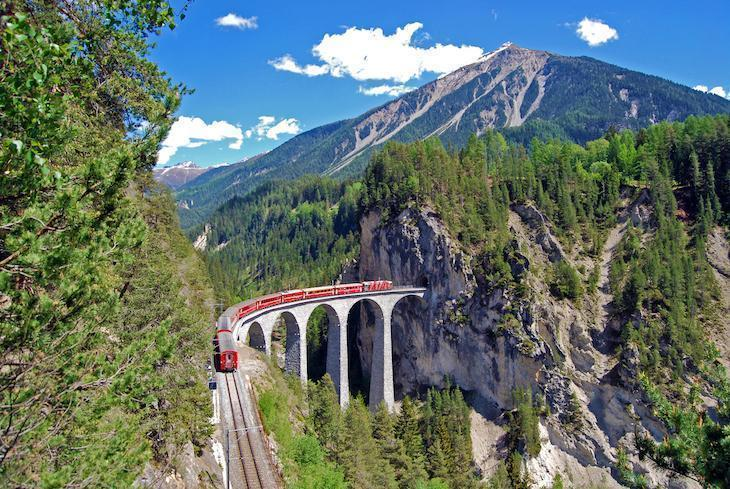Você pode não gostar de esquiar e ter receio de praticar outros tipos de esportes radicais no gelo, mas que tal aproveitar algum dia da viagem para curtir um indescritível trajeto de trem pelos alpes suíços e admirar algumas das paisagens mais bonitas do mundo, de pertinho e em total segurança? O famoso Glacier Express, por exemplo, faz o trajeto entre Zermatt (Matterhorn) à St. Moritz (Engadine Superior), no chamado “circuito das geleiras”.
A medieval Friburgo
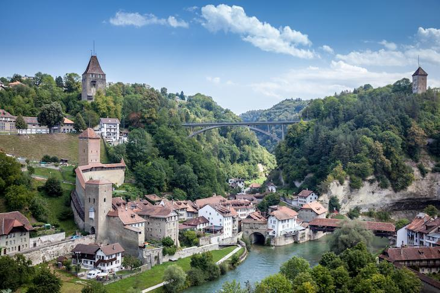Friburgo é dessas cidades/atrações com muita personalidade e todas as características capazes de deixar o visitante apaixonado e doido para fazer tudo o que tem direito. Mas calma! É imprudente deixar-se levar pela ansiedade e MUITO melhor absorver a atmosfera amena de um lugar com cerca de 200 fachadas góticas e baluartes com mais de 2 quilômetros, que serviam para proteger a cidade contra invasões. Não perca a oportunidade de caminhar pelas vias deste local histórico, preservado, e ao mesmo tempo, moderno e universitário. Sim, estudantes do mundo inteiro vão para lá estudar, e como consequência, a cidade vive aquele clima animado e festivo. Nas ruas e vielas há muitos cafés, bares, galerias de arte, etc. A catedral de Friburgo, cuja construção teve início em 1823, é outro ponto que merece destaque, em razão da beleza dos vitrais e dos 74 metros de altura de sua torre.
A ‘não turística’ Thun
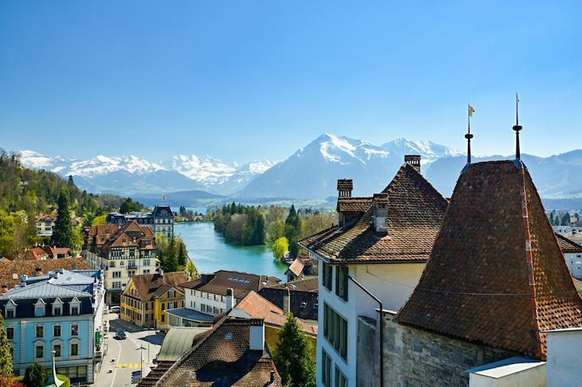É natural comprar cartões postais e procurar no Google por cidades famosas antes de fazer as malas e pegar o voo, mas pensa bem: sempre há uma cidadezinha pouco conhecida e despretensiosa que enche os olhos do visitante por diversas razões, concorda? Na Suíça, a pequena(e “alemã”) Thun é este exemplar. Agraciada por lagos de águas clarinhas, castelos medievais, vias estreitas, aquelas casinhas com fachadas bonitas e impagável vista dos alpes, Thun não tem a badalação de Genebra e Zurique, por exemplo, e traz a personalidade e todas aquelas nuances típicas de um lugar não muito visitado. Charme e muita tranquilidade!
Tunísia
A Tunísia é um país situado no Norte da África, limitado pelo Mar Mediterrâneo e pelo Deserto do Saara. Na capital, Túnis, o Museu Nacional do Bardo tem exposições arqueológicas que incluem desde mosaicos romanos até arte islâmica. A medina da cidade compreende a enorme Mesquita Al-Zaytuna e um mercado movimentado. Ao leste, o local da antiga Cartago apresenta as Termas de Antonino e outras ruínas, além de artefatos no Museu Nacional de Cartago. Capital: Tunes Moeda: dinar tunisino Presidente: Kaïs Saïed Continente: África
Pontos Turisticos
Oásis de Chebika
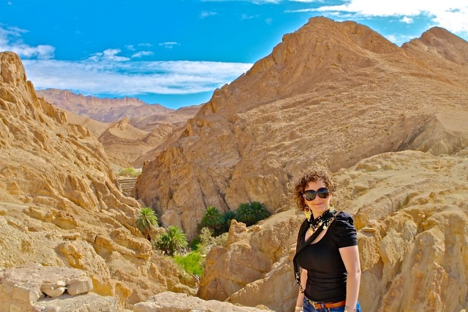Localizado no sopé das montanhas do Djebel el Negueb, o Oásis de Chebika, é um dos pontos turísticos mais bonitos da Tunísia. Encontra-se a pouco mais de 50 km Tozeur e a 10 km da fronteira com a Argélia. Dizem que na antiguidade, Chebika foi o posto romano de Ad Speculum e mais tarde, o abrigo do povo berbere. A paisagem é fascinante, composta por uma aldeia em ruínas, pequenas cascatas, oásis de montanha e lindos palmeirais onde são produzidas tâmaras, além de outros frutos típicos da região. Para quem não sabe, este local também foi palco das gravações dos filmes Star Wars, Nova Esperança e O Paciente Inglês. No geral, o acesso é feito com guia em um jipe 4×4. Imperdível!
Deserto Tunisiano
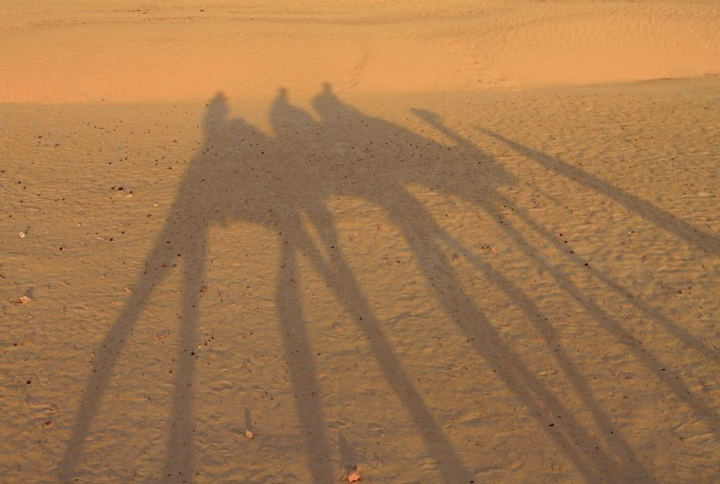Outra actividade interessante para os mais aventureiros, é o passeio pelas dunas do Deserto do Saara. Inclusive, a localidade de Ksar Ghilane, principal porta de entrada para o deserto tunisiano fica próxima ao Oásis de Chebika. As dunas por ali não são tão altas quanto as que já visitei em Erg Chebbi, no Saara Marroquino, mas ainda assim vale a visita. O cenário é árido e infinito com astral mágico. Durante o passeio pelo deserto também é possível conhecer as antigas ruínas do forte romano de Tisavar, construído em 184 d.C. Recomenda-se fazer a excursão com guia.
Melhores praias na Tunísia
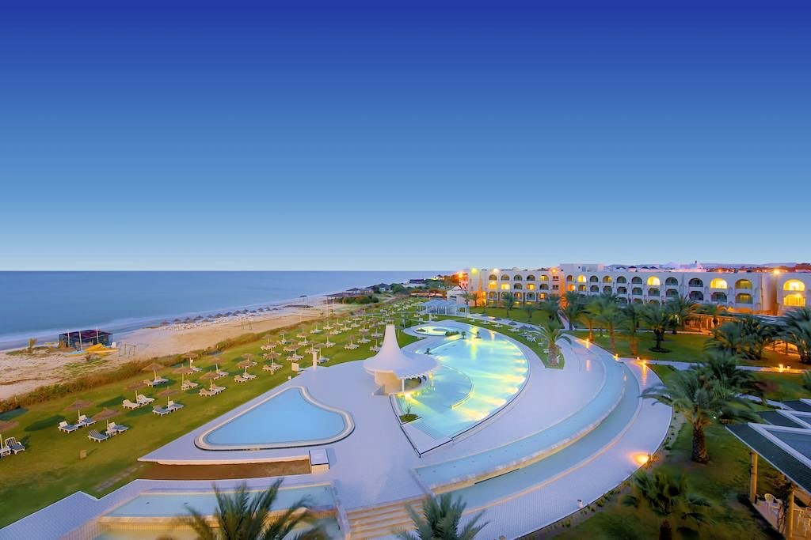As melhores regiões para curtir praia na Tunísia são: Djerba, Hammamet e Mahdia. Considerada a maior ilha costeira do Norte da África, Djerba ou “Ilha dos Sonhos”, abriga belas praias azuis turquesa. As imperdíveis são: Rass Taguerness, Praia de Seguia, Sidi Mahrez e a Praia de Aghir. Um dos melhores hotéis da ilha, é o Hasdrubal Prestige Thalassa & Spa Djerba. Conhecida como a riviera tunisiana, Hammamet oferece mais de 8 km de praias banhadas pelas águas mornas do Mediterrâneo. A estrutura hoteleira por ali é diversificada.